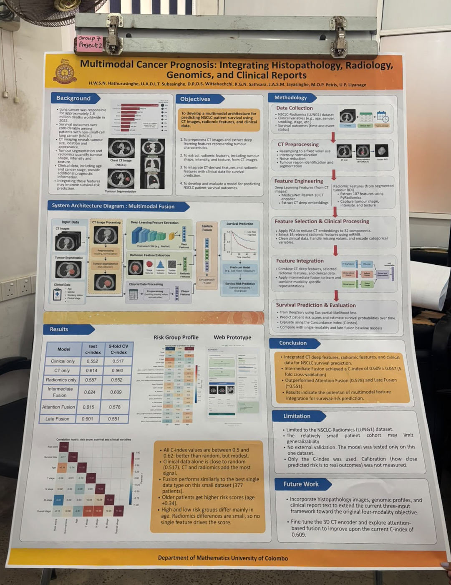
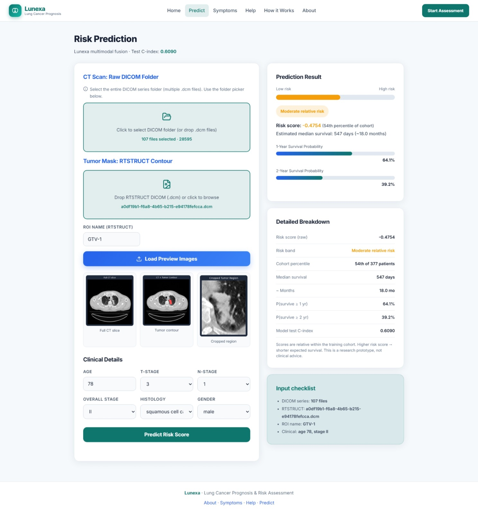
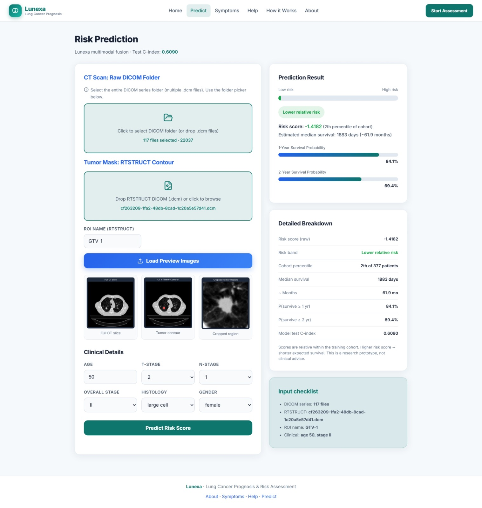
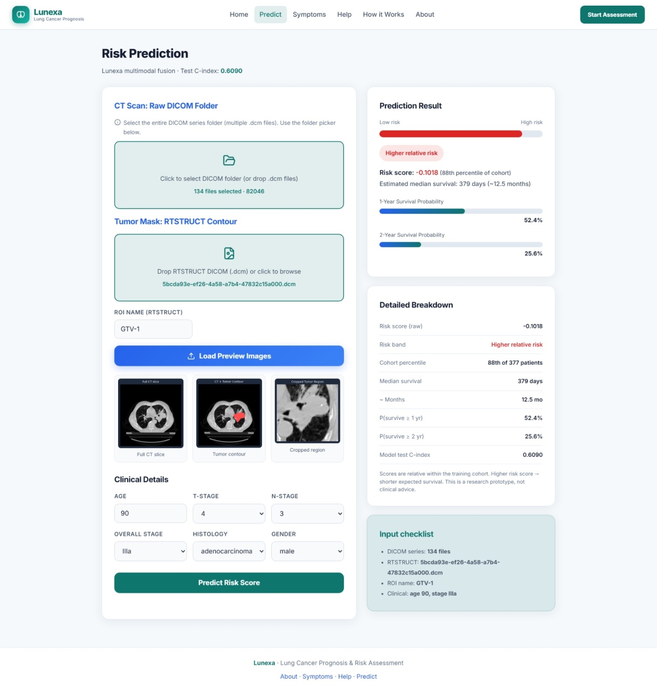
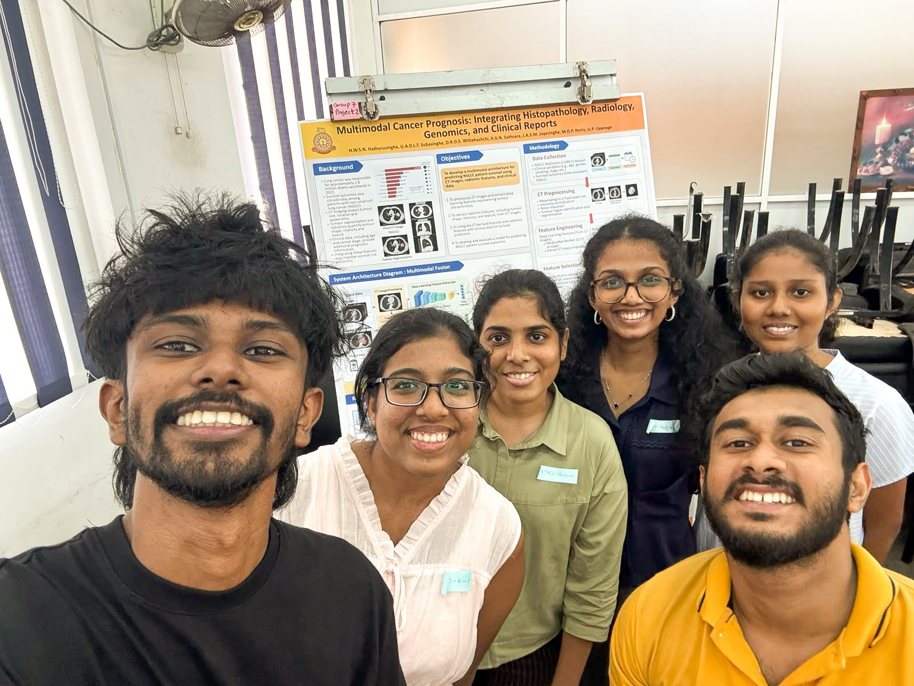
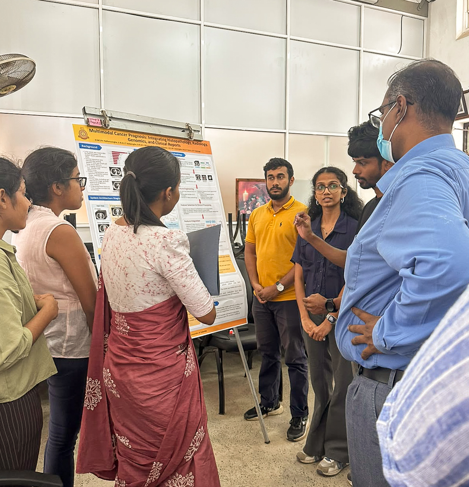
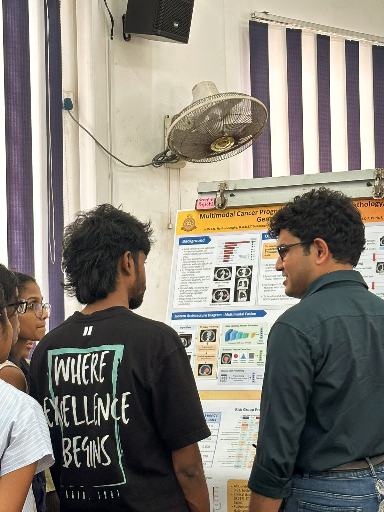
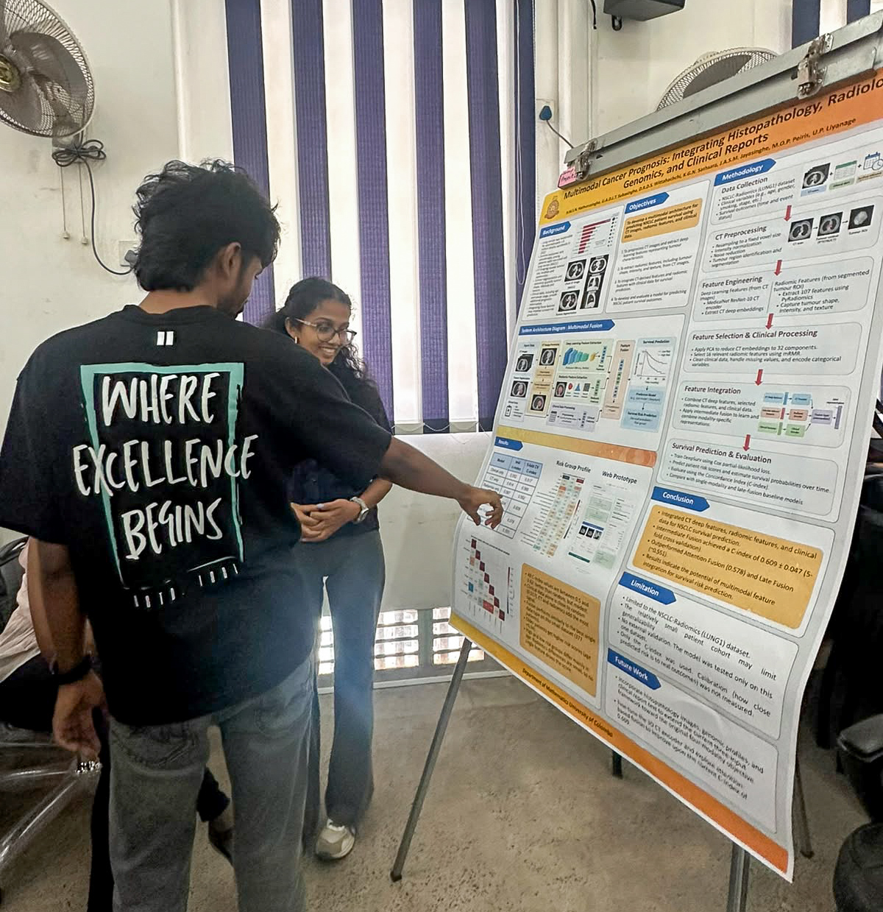

Predicting lung cancer survival by combining CT imaging, tumour radiomics and clinical data in one multimodal model. A group project from Scientific Computing with Machine Learning, University of Colombo, presented as a research poster.
Doctors often study scans and clinical records separately. This project brings CT features, radiomics and clinical data together to give each patient a survival risk score.
Dataset: NSCLC-Radiomics (Lung1) from The Cancer Imaging Archive, a public dataset with CT scans, tumour outlines and clinical records.
My role: Fusion & Training. I worked on the fusion models and their training.
Scope note: The poster title covers the full research theme (histopathology, radiology, genomics and clinical reports). What we built and tested uses three of those inputs: CT, radiomics and clinical data.
Presented at the poster session, Department of Mathematics, University of Colombo. Click the image to zoom in.

From raw scans and records to one survival risk score per patient.
Started with 422 patient records and cleaned them into a complete, numeric table.
CT series and tumour contours (RTSTRUCT) were downloaded with the TCIA Data Retriever, read from DICOM and resampled to a consistent voxel spacing across all patients. The tumour contours were used to extract the tumour region for the radiomics features.
A pretrained 3D MedicalNet ResNet-10 turns each CT volume into a 512-number vector.
PyRadiomics extracted 107 shape, intensity and texture features from the CT and tumour mask.
Three ways of combining the CT, radiomics and clinical features were compared:
The network outputs a risk score and is trained with the Cox partial-likelihood loss, which handles patients whose outcome is not yet known (censoring). Performance is measured with the concordance index (C-index) using 5-fold cross-validation.
K-means (k = 3) on the CT and radiomics features found three patient groups. One small group of 7 patients showed clearly worse survival on Kaplan-Meier curves, and a log-rank test showed the groups differ significantly.
C-index: 0.5 is random guessing and 1.0 is perfect. Each model was tested on a held-out split and with 5-fold cross-validation.
| Model | Test C-index | 5-fold CV C-index |
|---|---|---|
| Clinical only | 0.552 | 0.517 |
| CT only | 0.614 | 0.560 |
| Radiomics only | 0.587 | 0.552 |
| Intermediate fusion Best | 0.624 | 0.609 |
| Attention fusion | 0.615 | 0.578 |
| Late fusion | 0.601 | 0.551 |
All C-index values sit between 0.5 and 0.62: better than random, but modest. Clinical data alone is close to random, while CT and radiomics add the most signal. On this small dataset, fusion performs similarly to the best single data type.
Older patients receive higher risk scores. The high and low risk groups differ mainly in age, and the radiomics differences are small, so no single feature drives the score.
A small web app built on top of the trained model. Upload a CT series and tumour contour, enter the clinical details, and get a relative risk score with 1-year and 2-year survival estimates.



Built with: React (frontend) and FastAPI (backend).
Note: This is a research prototype. Scores are relative within the training cohort and are not clinical advice.
A 3D CNN trained from scratch gave weak, unstable features with only 263 training patients. A pretrained MedicalNet encoder, PCA and mRMR kept the feature count manageable.
Two data-leakage issues were found while retraining. They were fixed with corrected splits before the final results were produced.
Only the NSCLC-Radiomics (Lung1) dataset was used and the cohort is small. There is no external validation, and only the C-index was used, so calibration (how close predicted risk is to real outcomes) was not measured.
Add histopathology images, genomic profiles and clinical report text; fine-tune the 3D CT encoder; explore attention-based fusion further; add calibration metrics such as the Brier score and test on external datasets.
Department of Mathematics, University of Colombo.




H.W.S.N. Hathurusinghe, U.A.D.L.T. Subasinghe, D.R.D.S. Wittahachchi, K.G.N. Sathsara, J.A.S.M. Jayasinghe and M.O.P. Peiris.
Supervisor: Dr. U.P. Liyanage